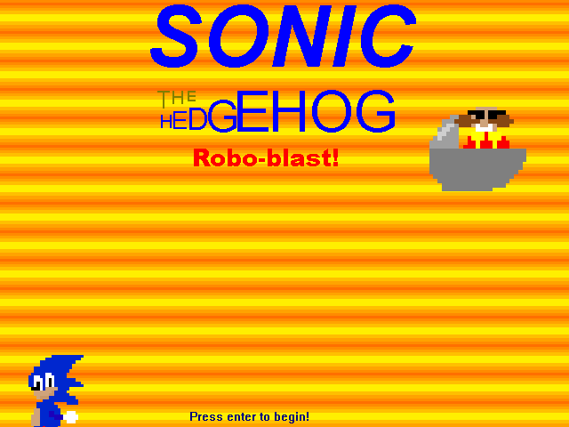
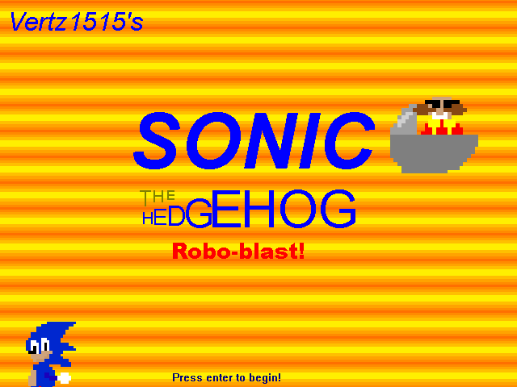

|
Home Downloads Levels Objects & Sprites Soundtrack Hall of Fame Credits |
 ... and welcome! Before the establishing of this page on January 19th, 2024. Most of the SRB2 community hadn't really documented this game to it's fullest potential, heck, it seemed that only 4 people before then had actual video footage of even completing the game legitimately. So me, and a few members over at the SRB20YA Discord Server took in upon themselves to thoroughly document this game to the best of our ability, plus making modified versions of SRB1 to fix many of its glaring issues. Vertz1515's SRB1!Vertz1515's SRB1 is a modified version of SRB1 which strives to fix many of the most profound issues that SRB1 is known for. It also served as our means of easily navigating through and documenting the game for this page. So... What's different? |
|---|